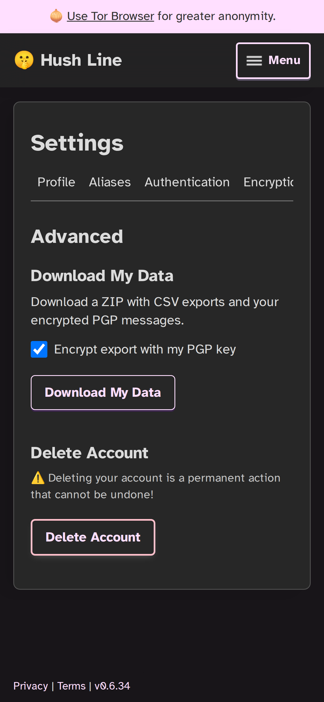

Take your records with you if your setup changes
Advanced settings let recipients export their Hush Line data, including encrypted PGP messages, before they close an account.

Advanced settings let recipients export their Hush Line data, including encrypted PGP messages, before they close an account.
